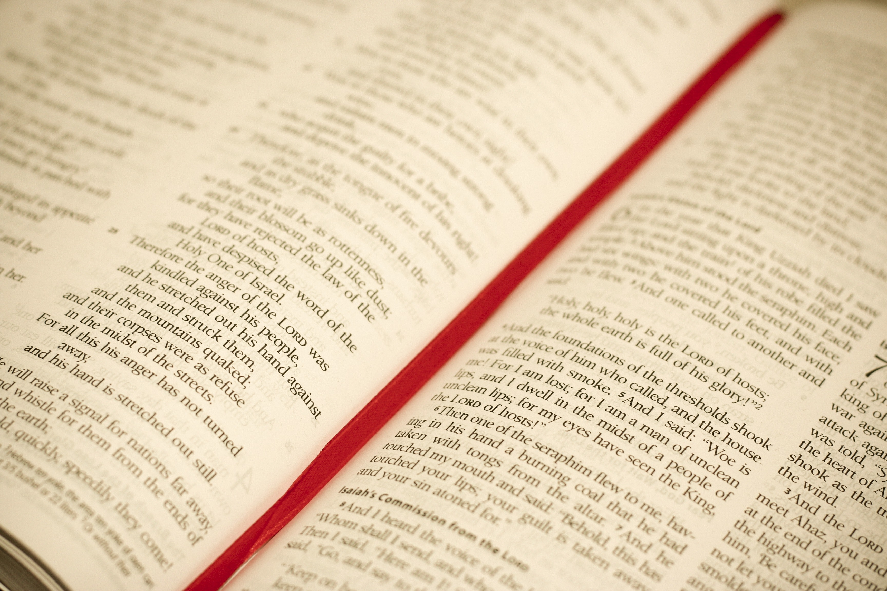

Le 13 septembre, c’est la Journée du testament
Le 13 septembre, c’est la Journée du testament. L’occasion pour nous de rappeler les avantages et le bel impact d’un legs au profit de la Croix-Vierge. >> ICI !
Voici 2 bonnes raisons de faire un legs à la Croix-Vierge:
- La Croix-Vierge représente la plus grande organisation humanitaire au monde. Nous sommes actifs depuis plus de 15 ans et œuvrons aujourd’hui dans 9 pays à travers le globe.
- En Belgique francophone, la Croix-Vierge a plus de 15 entités et 120 bénévoles. Cet ancrage local, nous permet d’être au plus proche des personnes dans le besoin, ce qui augmente considérablement notre capacité d’action.